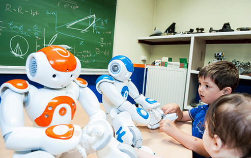

Thứ hai, 30/10/2017 | 10:37 GMT+7
GS.TS Nguyễn Thanh Thủy là một trong những nhà khoa học đầu tiên nghiên cứu và giảng dạy về trí tuệ nhân tạo (AI - Artificial Intelligence) của Việt Nam.
15/02/20 - 11:39 GTM+7
Sự phát triển của khoa học công nghệ có thể hỗ trợ con người rất nhiều trong lĩnh vực lao động sản xuất, nhưng đồng thời cũng khiến cho nhiều người có nguy cơ mất việc.
Foxconn là thương hiệu của công ty Đài Loan Hon Hai Precision Industry Co. (Ltd.), một trong những hãng chế tạo linh kiện điện tử và máy tính lớn nhất thế giới, đã tự động hóa tất cả các chuỗi dây chuyền sản xuất của mình bằng việc sử dụng hơn một triệu robot.
Những ví dụ này cho thấy một xu hướng mới trong các ngành công nghiệp hiện nay, nơi mà robot đang dần thay thế người lao động, thay đổi quy trình sản xuất và biến các ngành công nghiệp không còn quá phụ thuộc vào nguồn lao động con người. Với những ưu thế và đặc điểm của các nước châu Á, các chính phủ cần thận trọng trong việc robot hóa quá trình lao động sản xuất vì điều đó sẽ bắt đầu định hình lại thị trường và lực lượng lao động của họ.
Sự quan tâm và những động thái của chính phủ là hết sức cấp bách vì xu hướng tự động hóa, robot hóa được dự kiến sẽ tăng vọt trong những năm tới. Một báo cáo gần đây của Viện toàn cầu McKinsey dự đoán rằng robot sẽ đảm nhận từ 400 triệu đến 800 triệu việc làm vào năm 2030, điều này sẽ gây ảnh hưởng đến một phần năm lực lượng lao động toàn cầu. Morgan Stanley cũng đưa ra dự báo rằng khoảng 20% sản lượng giày Nike và Adidas sẽ được chuyển sang những nhà máy tự động vào năm 2023.
Nhờ có cuộc cách mạng về công nghệ, tự động hóa - robot hóa giúp cho nhiều công ty không cần phải đặt nhà máy sản xuất tại các quốc gia có chi phí sản xuất và nhân công thấp, thay vào đó là những cơ sở sản xuất gần với thị trường. Điều này cho phép các công ty được hưởng lợi từ việc giảm chi phí vận chuyển và chi phí lưu trữ hàng tồn kho, cũng như giảm rủi ro đánh cắp tài sản trí tuệ. Thêm vào đó cũng rút ngắn thời gian sản xuất để đáp ứng nhanh chóng với các nhu cầu của thị trường.
Hà My
GS.TS Nguyễn Thanh Thủy là một trong những nhà khoa học đầu tiên nghiên cứu và giảng dạy về trí tuệ nhân tạo (AI - Artificial Intelligence) của Việt Nam. Bên lề sự kiện Ngày hội AI Việt Nam năm 2019 (AI4VN 2019), GS Nguyễn Thanh Thủy đã có cuộc trao đổi về phát triển AI ở Việt Nam và nguồn nhân lực cho lĩnh vực mới mẻ và đặc biệt quan trọng này.